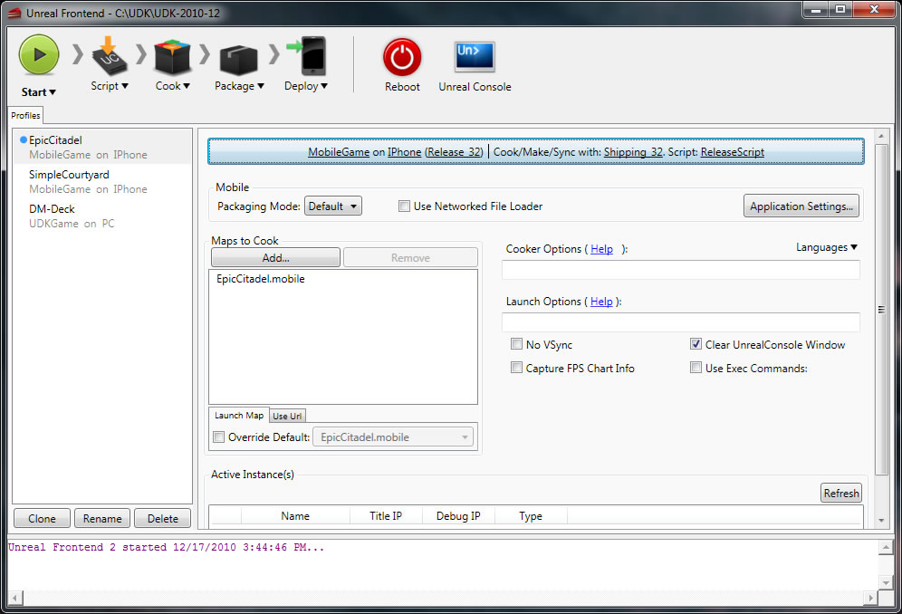

UDN
Search public documentation:
DevelopmentKitDeploymentKR
English Translation
日本語訳
中国翻译
Interested in the Unreal Engine?
Visit the Unreal Technology site.
Looking for jobs and company info?
Check out the Epic games site.
Questions about support via UDN?
Contact the UDN Staff
日本語訳
中国翻译
Interested in the Unreal Engine?
Visit the Unreal Technology site.
Looking for jobs and company info?
Check out the Epic games site.
Questions about support via UDN?
Contact the UDN Staff
UDK 에서의 배치(Deployment)
환경설정, 컴파일 및 테스트하기
다음 작업을 따라하기 전에 UDK를 한 번 실행시켜서 ini 파일을 초기화시킵니다. UDKGame/Config 디렉토리의 UDKEngine.ini 파일을 열어서 [UnrealEd.EditorEngine] 부분에 ModEditPackages=MyMod 줄을 추가합니다. 모드 편집 패키지를 둘 이상 둘 수도 있는데, 그냥 하나마다 별도로 디렉토리를 만든 다음 [UnrealEd.EditorEngine] 부분에 추가해 주면 됩니다. 이제 어플에 스크립트 소스 파일을 추가할 수 있습니다. Development\Src\MyMod\Classes 디렉토리를 엽니다. 언리얼스크립트 컴파일러가 인식할 수 있도록 소스 코스 파일의 확장자가 .uc인지 확인합니다. 평범한 게임타입 변종으로 시작해 보겠습니다. SuperFunGame 을 Development\Src\MyMod\Classes 에다 둡니다. Binaries 디렉토리(나 UDK 프로그램 파일 폴더의 바로가기)에서 UnrealFrontend 를 실행시키고, make 버튼으로 코드를 컴파일합니다. 이 게임타입을 기존 레벨로 테스트해 보려면, 특수한 명령줄을 넣어줘야 합니다. 언리얼에서는 커스텀 게임 파라미터를 URL 스타일 포맷으로 전달합니다. 어플용 유저 인터페이스 프론트 엔드를 만들 때도 이런 시스템을 사용할 수 있습니다.udk dm-deck?game=mymod.superfungame아무것도 지정하지 않았을 때 사용할 디폴트 게임타입을 UDKGame.ini 내의 [Engine.GameInfo] 부분에다 지정해서 바꿀 수도 있습니다. DefaultGame 및 DefaultServerGame 을 MyMod.SuperFunGame 으로 바꿉니다. 게임타입이 덮어쓰이지 않게 하려면 게임타입에서 SetGameType() (게임타입 설정 함수)를 구현했는지 확인하시기 바랍니다. 이 변경사항이나 기타 ini 변경사항을 패키지 모드에 전파하려면, DefaultGame.ini 파일의 디폴트도 변경해 줘야 합니다. UDK를 닫을 때, 해당 플레이 세션의 로그 정보는 UDKGame\Logs 디렉토리 안의 Launch.log에 모두 기록됩니다. UDK는 DLL 바인딩 을 통한 외부 어플(,즉 언리얼스크립트를 통해 호출할 수 있는 윈도우 DLL 내의 함수) 또한 지원합니다.
쿠킹
어플을 배포용으로 패키징하려면, (Binaries 디렉토리에서) UnrealFrontend를 실행합니다. 어플에는 맵이 최소 하나 있어야 하며, 패키징할 맵은 쿠킹을 해야 합니다. Unreal Frontend에서 프로파일을 선택한 다음 맵을 Maps to Cook 부분에 추가시킵니다. 그런 다음 Cook 버튼을 누르고 Cook Packages 를 선택하면 맵을 굽습니다. 쿠킹의 역할에 대한 상세 정보는 콘텐츠 쿠킹하기 페이지를 참고하시기 바랍니다.